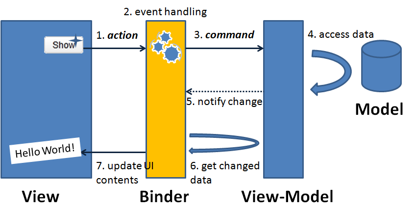

ngBasics
Created by niquola / @niquola
hospital-systems/waveaccess
2013
Teamlead @ hospital-systems


Why & When
Client side application?
Pulse
| watch | stars | auth | commits | files | add | del | |
| Angular.js | 1.470 | 13.400 | 45 | 126 | 72 | 2.085 | 1.509 |
| Ember.js | 683 | 7.800 | 29 | 71 | 120 | 4.085 | 1.071 |
| issues | pull req | |
| Angular.js | 424/34 | 33 |
| Ember.js | 33/11 | 31 |
Keys for understanding
Angularjs
Directives & Scopes
Imperative :(
$('#input').on('input', function(){
$('#out').text($(this).value());
})
Organized & decoupled, but imperative
var DocumentRow = Backbone.View.extend({
tagName: "li",
className: "document-row",
events: {
"change .input": "input"
},
initialize: function() {
this.listenTo(this.model, "change", this.render);
}
render: function() {... }
input: function() {... }
});
Do it again & again?
Find more generic way (DRY)
Declarative
Just say "WHAT TO DO", not "HOW TO DO".
{{message}}
machine should do it for me!
Declarative programming
code design paradigm
Some parts should be
complex but generic
to simplify usage
(see compilers, parsers etc)
Lets Implement It!
find (compile)
DIRECTIVES
//directives
function model(el, scope) {...}
function interpolate(el, scope) {...}
//complie document
var scope = {} //container for data
$("[ng-model]")
.each(function(el){ model(el, scope) })
$("*:contains('{{')")
.each(function(el){ interpolate(el, scope) })
Simple interpolation
function interpolate(el, scope) {
var template = el.innerHTML; //get & remember template
var prop = /{{(.+)}}/.exec(template)[1];
//imagine we have such method,
//calling callback when prop changed
scope.$watch(prop, function() {
console.log(scope)
el.innerHTML = template.replace('{{' + prop +'}}', scope[prop]);
})
}
ng-interpolate.js
function interpolate(el, scope) {
var template = el.innerHTML; //get & remember template
var prop = /{{(.+)}}/.exec(template)[1];
//imagine we have such method,
//calling callback when prop changed
scope.$watch(prop, function() {
console.log(scope)
el.innerHTML = template.replace('{{' + prop +'}}', scope[prop]);
})
}
Simple model directive
function model(el, scope) {
var model = el.getAttribute('ng-model')
$(el).on('input',function(){
var data = el.value;
scope.apply(function(){
scope[model] = data;
})
})
scope.watch(model, function(val) {
el.value = scope[model];
})
}
ng-input.js
Directives declaratively
binded by Scope
Web components
Scope is View Model (MV* family)
 GUI Architectures (M. Fowler) | MVVMScope just a container object
function Scope() {
this.$$watchers = null
this.$$asyncQueue = [];
...
}
Scope.prototype = {
$watch: function(watchExp, listener,){...}
$watchCollection: function(obj, listener) {...}
$digest: function() { ... }
}
rootScope.js
Digest Loop

Controller is just
a scope constructor
function TodoCtrl($scope, $http) {
$scope.todos = $http({method: 'GET', url: '/todos'}) // promises
$scope.done = function(todo) { todo.status = 'done'; ...}
}
Dependency Injection
Traceable deps
function TodoCtrl($scope, $http) {... // all external deps
Testable
var http = function() { return [{name: "Task1"}] }
var scope = {}
TodoCtrl(http, scope)
expect(scope.todos).toEqual([...])
Overview

Angular Conceptual Overview